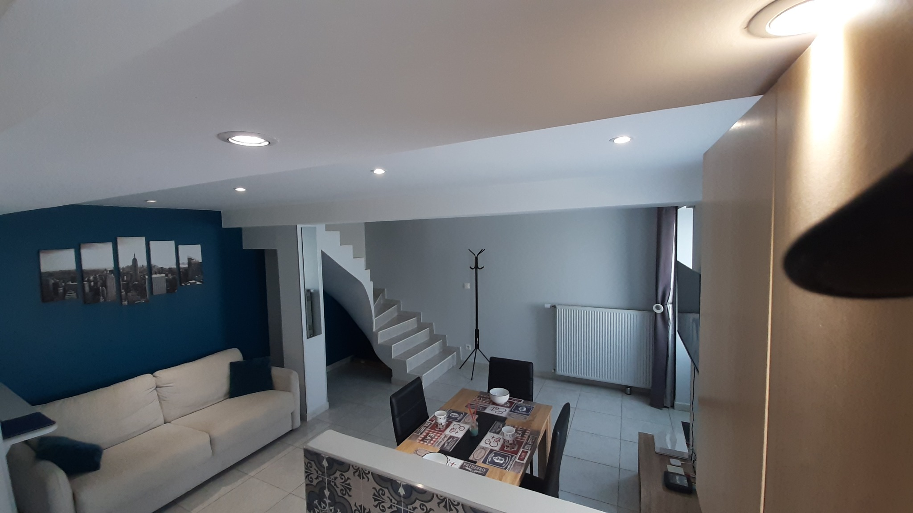
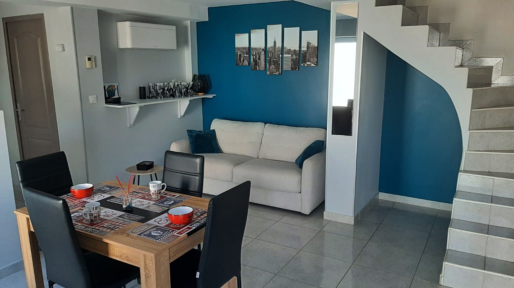
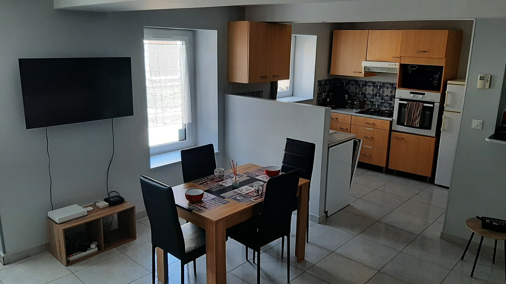
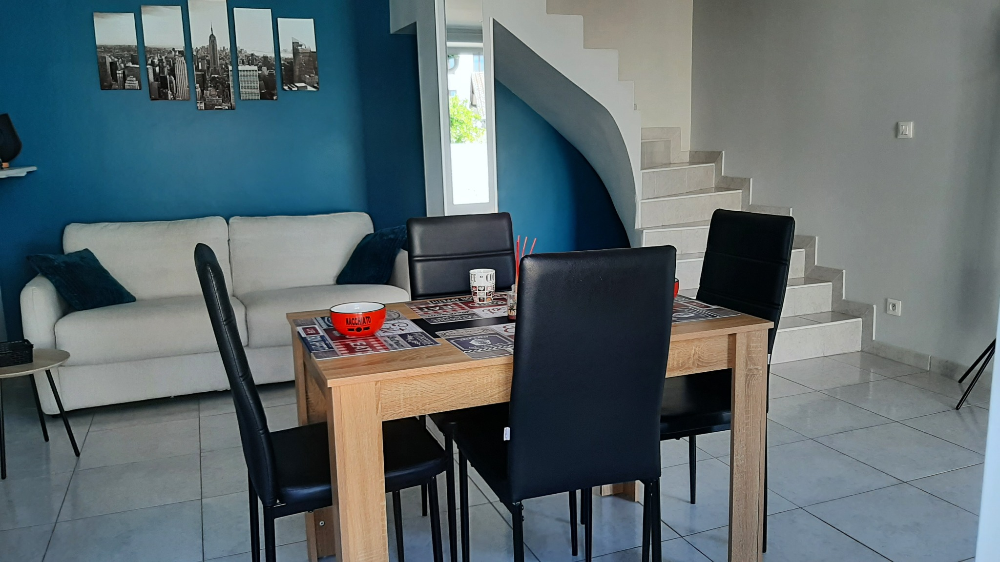
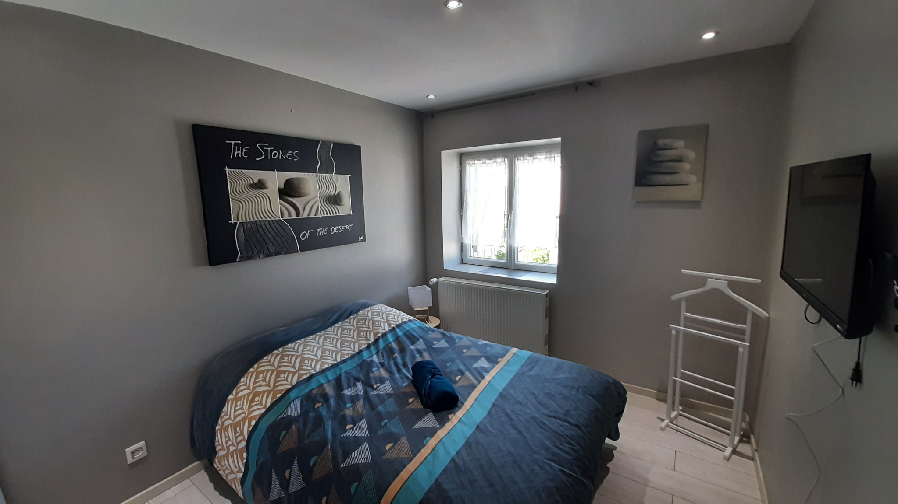
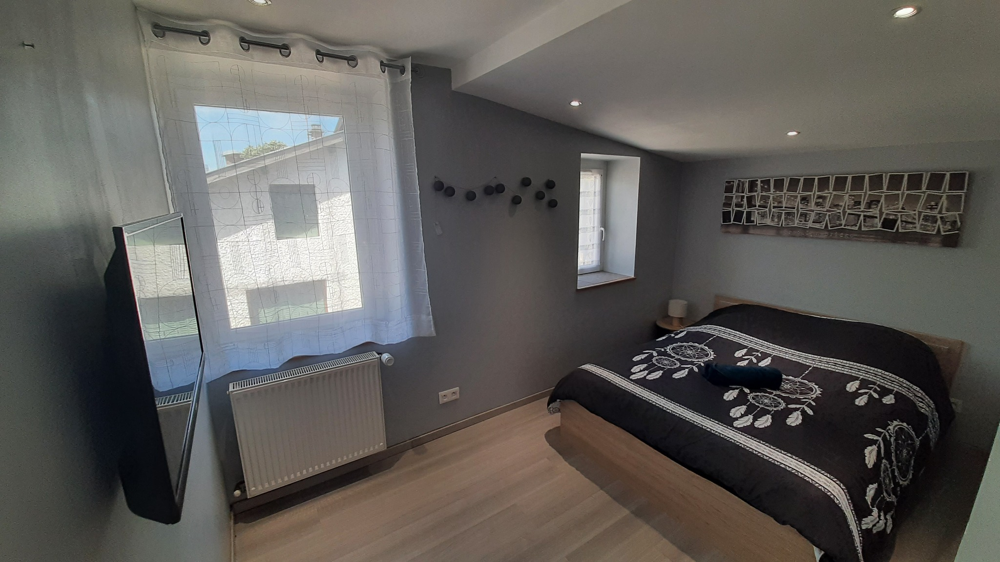
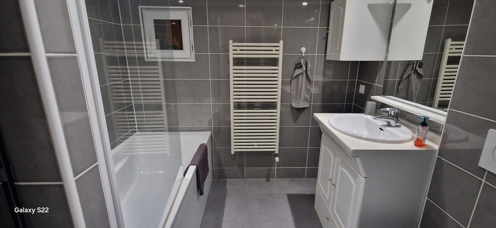
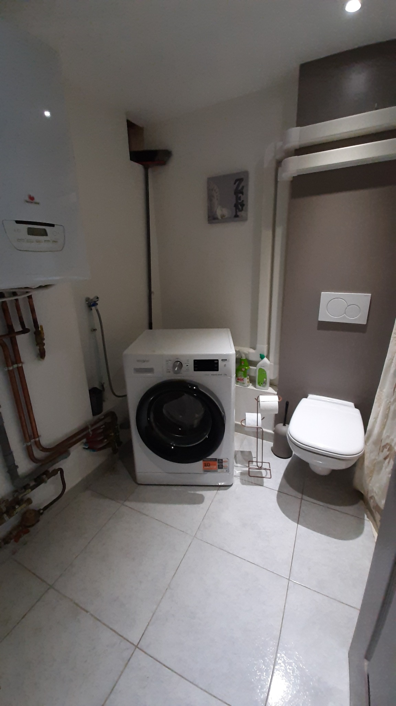
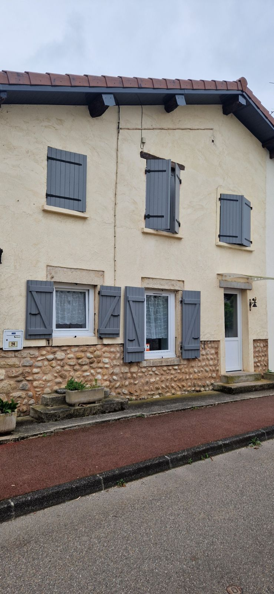

Un logement confortable et pratique pour vos déplacements professionnels comme pour vos séjours touristiques. 2 chambres, canapé-lit dans le séjour, arrivée autonome, Wi‑Fi, climatisation et parking gratuit à proximité.
Cosy Blyes est une maison de village pensée pour se sentir rapidement chez soi, que vous soyez en mission professionnelle dans le secteur ou en séjour dans l’Ain.
Au rez-de-chaussée : cuisine équipée ouverte sur le séjour, espace repas, canapé-lit, WC et buanderie avec lave-linge. À l’étage : deux chambres avec lits 140 × 200 et téléviseurs connectés, ainsi qu’une salle de bain avec baignoire et WC.

Arrivée autonome et accès simple, adaptés aux horaires de déplacement professionnel.
Deux vraies chambres, un canapé-lit dans le séjour, Wi‑Fi, climatisation, cuisine équipée et lave-linge pour les séjours de plusieurs nuits.
Contact direct avec le propriétaire, facture disponible pour les professionnels et proposition adaptée aux séjours de plusieurs nuits ou semaines.
Cosy Blyes accueille aussi les couples, familles et voyageurs de passage pour un week-end ou quelques jours de découverte.
La cité médiévale se trouve à environ 16 minutes : une belle idée de sortie pendant votre séjour.
Profitez d’un logement indépendant et confortable pour rayonner dans le secteur, vous promener et découvrir les environs.
Deux chambres avec lits 140 × 200 et un canapé-lit dans le séjour, cuisine équipée, Wi‑Fi, climatisation, linge fourni et arrivée autonome pour organiser votre séjour librement.
Des espaces fonctionnels, lumineux et équipés pour votre séjour.








Le calendrier de Cosy Blyes est synchronisé entre les plateformes. Pour consulter les dates réellement libres, ouvrez le calendrier Airbnb puis revenez ici pour réserver directement.
À partir de 69 € / nuit
Tarif direct selon les dates, la durée du séjour et le nombre de voyageurs.
Les tarifs affichés sur Airbnb peuvent être supérieurs en raison des frais liés à la plateforme.
Vous n’êtes pas obligé de réserver sur Airbnb : après avoir vérifié vos dates, contactez directement Cosy Blyes.
Une adresse pratique pour travailler dans le secteur et découvrir les environs.
Les temps de trajet sont indicatifs et peuvent varier selon la circulation.
Après avoir vérifié vos dates, contactez directement Cosy Blyes pour connaître le tarif correspondant à votre séjour.